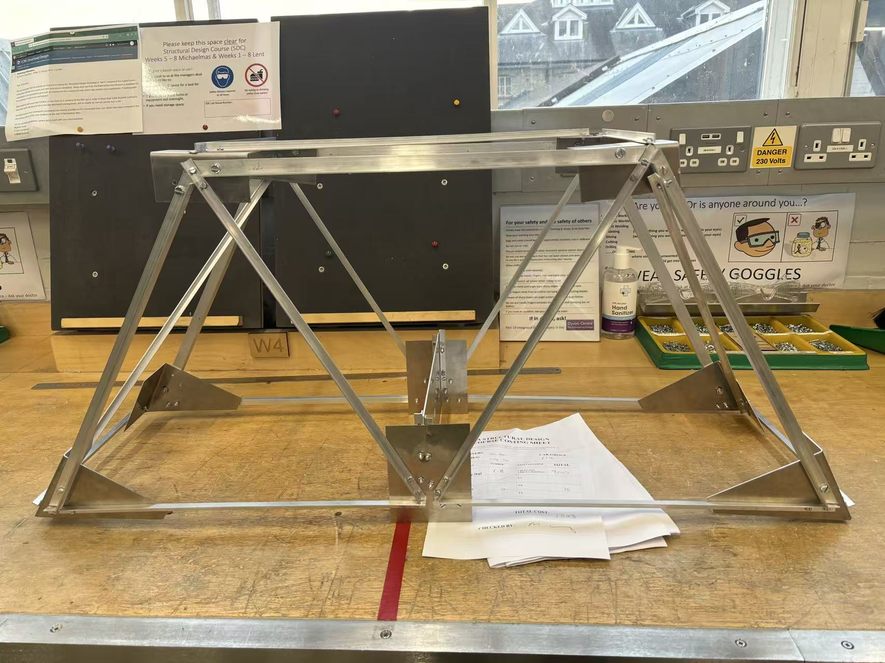

Yiling Fan (樊怡伶)
I am a final-year MEng student at the University of Cambridge (Murray Edwards College), recipient of the Mary Dyson Scholarship. My core interests lie at the intersection of robotic decision-making & control, state estimation (SLAM/IMU), and embodied physical AI, with a particular emphasis on dynamic bipedal and humanoid platforms.
Download Full CVResearch & Engineering Projects

Evaluated and implemented multi-modal state estimation algorithms for mobile platforms in dynamic environments. Integrated IMU dead-reckoning with motor encoders, resolved scale ambiguity in monocular ORB_SLAM2, and incorporated 2D LiDAR pose tracking using the SAM toolbox for drift-resistant localization.

Led the electrical sub-team at Cambridge to construct an autonomous mobile robot from scratch. Designed custom adapter PCB interface boards, programmed PicoBot microcontrollers for low-latency reactive control, and calibrated optical, ultrasonic, and magnetic sensor arrays.
Engineered an analog optical fiber transmitter and receiver circuit. Designed LED driving circuitry, photodiode transimpedance amplifiers, and filtering stages to transmit high-fidelity real-time signals over optical fiber with minimal distortion.

Developed multivariable control strategies for a Multi-Input Multi-Output (MIMO) system. Formulated state-space models, synthesized state-feedback controllers, and implemented Gain Scheduling to guarantee closed-loop asymptotic stability across nonlinear operating regimes.

Designed mechanical chassis, mounting structures, and robotic enclosures using SolidWorks. Performed stress/strain analyses and optimized component layouts for structural rigidity, lightweighting, and seamless hardware assembly.
Industrial Experience
- Utilized TSMaster for vehicle chassis control and measured turning radii under dynamic steering wheel angles across multiple car models.
- Constructed PID control algorithms, state-space equations, and Simulink simulation models for multi-DOF dynamic systems.
- Analyzed autonomous parking field tickets by evaluating vehicle speed, heading angle, and lateral error using MATLAB and PlotJuggler.
- Developed automated data visualization tools using Python (Pyecharts) and MySQL for battery error analytics across multiple vehicle fleets.
- Contributed to AI Agent development by engineering prompt logic and query categorization for technical knowledge retrieval.
- Awarded "Outstanding Individual" and "Outstanding Team" honours.
Honors, Awards & Skills
- Mary Dyson Scholarship (Awarded by James Dyson Foundation) 2024 & 2025
- National Talent Program in Physics (Ministry of Education & Zhejiang University) 2020 – 2021
- Senior Mathematical Challenge (Global Gold & Best in School, Top 10%) 2022
Key Technical Skills
Languages & Software: Python, C++, MATLAB & Simulink, SolidWorks, KiCad, LTSpice, PicoScope, MySQL, PlotJuggler, TSMaster, LaTeX.
Core Coursework: Systems & Control, Signals & Systems, Statistical Signal Processing, Radio Frequency Electronics, Integrated Digital Electronics, Information Theory & Coding.